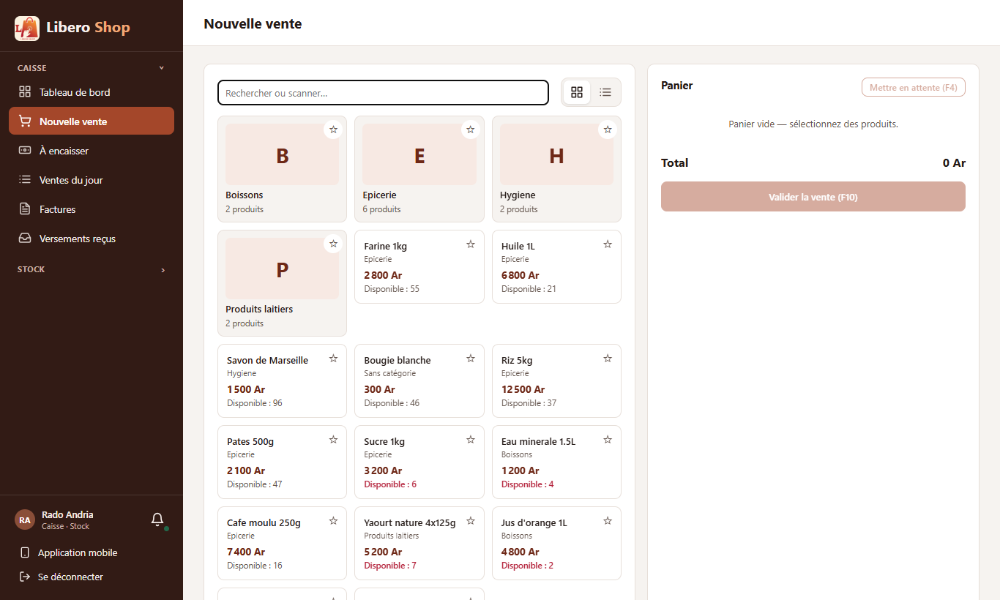
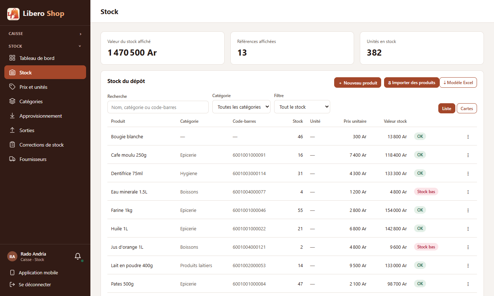
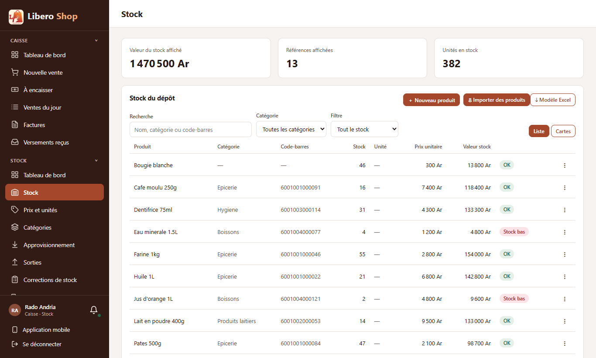

← Tous les comptes rendus de l'interface
UI-87Menu latéral d'un compte à plusieurs rôles
Résumé
- Un compte à plusieurs rôles (par exemple Caisse · Stock) voit maintenant une seule section ouverte : celle de la page en cours.
- Les autres sections ne montrent que leur titre, avec une flèche ; un clic les ouvre.
- Le menu tient dans l'écran : « Fournisseurs » n'est plus coupé en bas.
- On ne voit plus deux « Tableau de bord » l'un sous l'autre : chacun est sous son titre, et un seul est ouvert à la fois.
- Un compte à un seul rôle garde exactement le menu d'avant.
1. Le problème
Rado a deux rôles, caisse et stock. Son menu empilait les deux listes : quatorze entrées, dont deux « Tableau de bord ». Sur un écran de portable, le bas du menu (« Fournisseurs ») sortait de l'écran et il fallait faire défiler le menu.
2. Ce qui a été fait
Figure 1 — La section de la page en cours est ouverte, les autres sont repliées sous leur titre.
La règle tient dans une fonction testée (openSections) : un seul rôle, tout est ouvert ; plusieurs rôles,
la section de la page en cours, plus celles ouvertes à la main. Sur une page qui n'appartient à aucune section (le profil),
la première est ouverte.
3. Le résultat en images
Rado — caisse et stock

Figure 2 — Sur « Nouvelle vente », la section Caisse est ouverte ; Stock n'est qu'un titre.

Figure 3 — Sur « Stock », c'est l'inverse ; « Fournisseurs » est visible sans faire défiler.

Figure 4 — Un clic sur « Caisse » rouvre la section, à côté de celle en cours.
4. Tableau récapitulatif
| Fichier | Changement |
|---|---|
ui/…/core/config/navigation.ts | openSections : quelles sections sont ouvertes |
ui/…/app.component.ts, app.component.html | titres de section cliquables, sections repliées |
ui/src/styles.scss | style du titre cliquable et de sa flèche |
ui/…/app.component.spec.ts | tests adaptés : la seconde section s'ouvre au clic |
| Règle | Test |
|---|---|
| Un rôle : tout ouvert ; plusieurs : la section en cours | navigation.spec.ts |
| Les sections ouvertes à la main restent ouvertes | navigation.spec.ts |
| Page sans section : la première est ouverte | navigation.spec.ts |
| Deux rôles : 6 entrées, puis 10 après un clic sur le second titre | app.component.spec.ts |
Tests : interface au vert (232 tests). Aucun changement côté serveur.